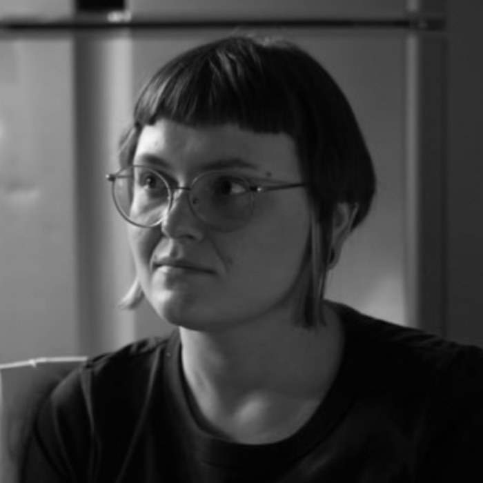
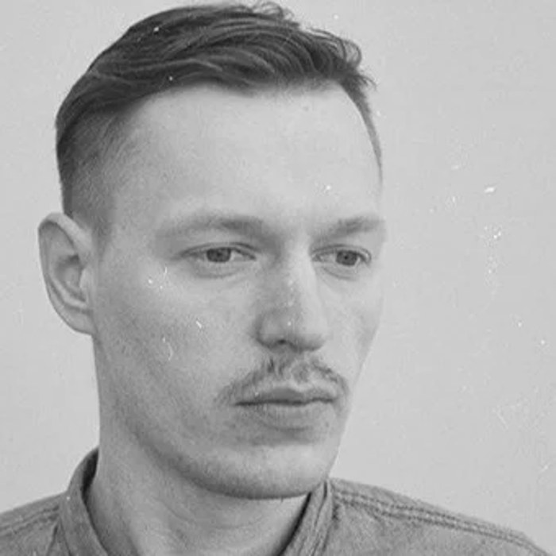

LOCO
ARTS
A website for the LOCO Arts ecosystem — artists, art, programs, opportunities and community, in one place.
Tier builder
Every group of screens, and how each tier changes it
Each group is a set of screens with their transitions, and options showing which tier uses which solution. The bar below adds up hours and monthly services as you go: scrolling past a group adds all of it; opening its screens one by one adds only the screens you look at and the options you pick. Arrows top-right jump section to section.
Monthly services for the chosen options
How we read the briefOne platform, three levels of ambition
How we read the brief
One platform, three levels of ambition
Every tier delivers the complete brief. The tiers differ in design depth, presentation and future-facing features — never in required functionality.
Public identity
- Contemporary, cultural, warm
- Artworks provide the colour
- Experience first, directory second
Working platform
- Artists, artworks, exhibitions
- Programs, open calls, studios
- Membership, My LOCO, video archive
Enter once
- Artwork Archive stays the source of truth
- Structured CMS, not a page builder
- EN / GE from launch
Tier 1Essential — 6 weeks · 49 screens
Essential
The complete brief: every required screen and function, final design from the Brand Book, on a reliable modern stack.
Design
Interface
- One visual concept on LOCO’s approved UX layouts
- Every screen for desktop, tablet and mobile
- UI kit with all states: hover, focus, error, loading, empty
Typography
- Georgian (Mkhedruli) and Latin pairing
- Built on the LOCO Arts Brand Book
Motion
- Page transitions, scroll reveals, filter animations
- Homepage hero ready for video; static image at launch
Screens and functions by section
1Homepage
| ID | Screen | Content |
|---|---|---|
| P01 | Home | Hero (image, video-ready) · current exhibition · curated artworks (Artwork Archive collection) · Studios & Membership module with APPLY FOR A STUDIO / JOIN MEMBERSHIP · upcoming programs · About · Partners & Sponsors · newsletter. Modules reorderable in CMS. |
Functions
- Modules reorderable and featureable in the CMS
- Curated artworks driven by an Artwork Archive collection
- Hero ready for video; static image at launch
- Studios & Membership module with direct APPLY FOR A STUDIO and JOIN MEMBERSHIP buttons
2Artists
| ID | Screen | Content |
|---|---|---|
| P02 | Artists — directory | A–Z index, search, category filters; name-led list. |
| P03 | Artist profile | Portrait, name, birth year, 120–200 word bio, statement, 3–5 selected exhibitions & projects, CV download, website / social, EDITIONS & MERCHANDISE ↗ link, artworks strip, studio / membership CTAs. |
Functions
- A–Z directory with search and agreed category filters
- Profiles as structured CMS entries linked to Artwork Archive artist records
- CV upload / replacement by staff
- Optional EDITIONS & MERCHANDISE ↗ link to shop.finearts.ge, editable without developer help
3Artworks
| ID | Screen | Content |
|---|---|---|
| P04 | Artworks — catalogue | Grid / list view, filters (artist, medium, subject / collection, size, price range), sort, result count, pagination; mobile filter drawer. |
| P05 | Artwork detail | Images, artist, title, year, medium, dimensions, availability, price / price on request, INQUIRE, related works. |
| P06 | Artwork inquiry | Modal form; submission stored in CMS and e-mailed to staff. |
Functions
- Artwork Archive as the source of truth; LOCO never re-enters artwork data
- Catalogue filters: artist, medium, subject / collection, size, price range; availability optional
- Card fields: image, artist, title, medium, price / price on request
- Detail adds year, dimensions, availability, INQUIRE
- Homepage selection driven by an Artwork Archive collection
5Exhibitions & Open-Air Gallery
| ID | Screen | Content |
|---|---|---|
| P07 | Exhibitions — overview | Current (prominent), Upcoming, Past; Hall 11 and Open-Air Gallery entry points. |
| P08 | Exhibition detail | Title, dates, curator, main visual, curatorial text, participating artists, selected artworks, related programs, press release PDF, documentation gallery. |
| P09 | Past exhibitions archive | Filterable archive by year / type. |
| P10 | Open-Air Gallery — overview | Intro, works list, masterplan. Built now, published for March–April 2027. |
| P11 | Open-Air work detail | Work, artist, location, related programs; QR landing target. |
Functions
- Current / Upcoming / Past computed from dates automatically
- Exhibition ↔ artists ↔ artworks ↔ programs relations
- Open-Air data structure (location, coordinates, QR slug) prepared now for 2027 activation
- Visible under Exhibitions and About / What We Do
5Programs
| ID | Screen | Content |
|---|---|---|
| P12 | Programs — overview | Representative visual, program types, featured upcoming program, upcoming list. |
| P13 | Programs — full calendar | Date-led list with type filters (course, workshop, masterclass, lecture, artist talk, other). |
| P14 | Program detail | Title, date, time, description, speaker / instructor, language, practical info, price, member benefit, status, link to recording (members). |
| P15 | Program registration | Form with states: Registration Open / Fully Booked / Waiting List; paid or free. |
| P16 | Past programs archive | Archive list with type / year filters. |
Functions
- Single program system; types are filters
- Registration with capacity managed internally, statuses Open / Fully Booked / Waiting List
- Automatic waiting-list notification when a place frees up
- Free, paid and member-discounted pricing
- Link from past program to its recording in the video archive
5Open Calls
| ID | Screen | Content |
|---|---|---|
| P17 | Open Calls — active call | Campaign visual, title, category, deadline, brief description, View details / Apply. |
| P18 | Open Calls — no active call | Message + newsletter subscription invitation. |
| P19 | Open Call detail | Full description, deadline, eligibility, requirements, supporting documents. |
| P20 | Open Call application | Form with document uploads. |
| P21 | Open Calls archive | Restrained archive of previous LOCO calls and results. |
Functions
- One or more active calls, empty state with newsletter invitation
- Custom application forms per call with document uploads
- Submissions with statuses, internal notes and export
- Archive of previous calls and results
3Artist Studios
| ID | Screen | Content |
|---|---|---|
| P22 | Apply for a Studio | Who can apply, studio types / sizes, facilities, practical terms, what is included, availability, Membership Included block with link to Membership. |
| P23 | Floor plans viewer | CMS-managed PDF / image block, lightbox with zoom, download. |
| P24 | Studio application | Multi-step application / request flow. |
Functions
- Dedicated conversion page
- Floor plans as CMS file block (PDF / image) with lightbox and download
- Studio availability managed separately from floor-plan files
- Membership Included block linking to Membership
- Multi-step application
4Membership & payments
| ID | Screen | Content |
|---|---|---|
| P25 | Membership | What it is, who it is for, all benefits, video access, opportunities, program discounts, price / duration, how to join, EXPLORE ARTIST STUDIOS link. |
| P26 | Join membership / checkout | Account creation + online payment. |
| P27 | Activate access code | Code / coupon activation for studio residents and partners. |
| P28 | Payment result | Success and failure states. |
Functions
- Public Membership page
- Online payment via Bank of Georgia or TBC e-commerce, Apple Pay / Google Pay where supported
- Access-code activation for studio residents and partner agreements
- Membership periods, expiry reminders and renewal
- Recurring auto-renewal in Max tier
2Art Tours
| ID | Screen | Content |
|---|---|---|
| P29 | Art Tours | Introduction, tour formats, group information, languages, duration, price / on request. Built now, published on LOCO's decision. |
| P30 | Request a Tour | Request form. |
Functions
- Tour formats, groups, languages, duration, price / on request
- Request a Tour form
- Built now; published on LOCO's decision
2About, Partners & Sponsors
| ID | Screen | Content |
|---|---|---|
| P31 | About | LOCO Arts text, separate LOCO Park block, masterplan, What We Do clickable headings. |
| P32 | Partners & Sponsors | Two logo groups, linked; CMS-ordered. |
Functions
- Text-led editorial About with separate LOCO Park block
- What We Do clickable headings
- Partners and Sponsors logo groups: add, remove, reorder, link, categorise
5Search, contact & utility pages
| ID | Screen | Content |
|---|---|---|
| P33 | Collaborate / Contact | Become a Partner, Become a Sponsor, Host an Event, general contact forms. |
| P34 | Search results | Global search across artists, artworks, exhibitions, programs, open calls, pages; grouped results. |
| P35 | Legal page template | Privacy, Terms, Cookie Policy and program / membership / open-call terms. |
| P36 | 404 / error | Branded error page with navigation back. |
| P37 | Form confirmation | Thank-you state shared by all forms. |
Functions
- Global search across all public content in EN and GE
- Typo-tolerant, instant results, grouped by content type
- Newsletter, artwork inquiry, studio application, program registration, membership, open call, art tour, partnership / sponsorship, contact
- All submissions stored in the CMS, e-mailed to the responsible team, exportable to CSV, with processing status
- Spam protection on every form
- E-mail required, name optional, multiple interests incl. “All”
- Synchronised to the chosen e-mail platform with interest groups
12My LOCO — member area
| ID | Screen | Content |
|---|---|---|
| M01 | Sign in | E-mail + password; magic-link option. |
| M02 | Create account | Registration, consent checkboxes. |
| M03 | Password reset | Request + set new password. |
| M04 | My LOCO — dashboard | Membership status and expiry, upcoming registrations, latest opportunities and videos. |
| M05 | Registrations & applications | Program registrations, studio and open-call applications with statuses. |
| M06 | Benefits & discounts | Member benefits, partner discounts, program discounts. |
| M07 | Opportunities database | Members-only external opportunities with ArtConnect-style filters (type, discipline, deadline, location, fee). |
| M08 | Opportunity detail | Full description, deadline, external link. |
| M09 | Video archive | Catalogue with filters (type, artist, year, language) and search. |
| M10 | Video page | Player, description, linked program / speaker, subtitles EN / GE. |
| M11 | Account & membership | Profile, membership period, payment history, renew, language preference. |
| M12 | Locked content gate | Shown to non-members: preview + JOIN MEMBERSHIP. |
Functions
- Membership status, registrations, applications, benefits
- Members-only opportunities database with filters
- Educational / video archive
- Hosted on Mux with signed playback URLs tied to an active membership
- Per-video visibility: public teaser or members-only
- Linked to programs, speakers and artists
- Subtitles EN / GE (automatic where supported, uploadable .vtt otherwise)
Platform-wide
CMS & editorial control
- Structured templates — editors fill fields, cannot break layout
- Roles and permissions
- Drafts, scheduled publishing, version history
- Reorderable homepage modules
Languages
- EN / GE from launch with proper Georgian typography
- AI-assisted translation draft for every field, human review and manual override
Technical baseline
- Responsive, optimised images (AVIF / WebP, responsive sizes), lazy loading, CDN caching
- Keyboard navigation, contrast, semantic structure, accessible forms, alt text EN / GE
- Clean URLs, editable meta, sitemap, robots, canonicals, Open Graph, structured data, redirects, noindex for private pages
- Analytics with events: inquiries, registrations, studio applications, membership, newsletter, tour requests
- HTTPS, secure authentication, member-data protection, daily backups with restore, dependency update process
- Consent and policy mechanisms for documents prepared by LOCO's lawyer
Components and e-mails
Global components
- Header — desktop, with primary navigation and utility functions (EN / GE, Search, Member Login, Apply for a Studio)
- Mobile menu overlay
- Search overlay with instant suggestions
- Footer — Explore, LOCO, Membership, Collaborate, Legal, Social
- Newsletter block and modal — e-mail, optional name, interest selection incl. “All”
- Cookie consent banner and preferences
- Language switch EN / GE
- Filter drawer (mobile)
- Cards: artist, artwork, exhibition, program, open call, video, opportunity, partner logo
- Buttons, inputs, selects, checkboxes, date and status badges, breadcrumbs, pagination, tabs, toasts — with hover, focus, error, disabled, loading and empty states
- Skeleton loading placeholders
Transactional e-mails, EN / GE
- Newsletter subscription confirmation
- Artwork inquiry — confirmation to visitor + notification to staff
- Program registration confirmation / waiting list / spot available
- Studio application received
- Open Call application received
- Art Tour request received
- Membership welcome and payment receipt
- Membership expiry reminder
- Account verification and password reset
- Partnership / sponsorship / contact form received
CMS collections
| Collection | Managed content |
|---|---|
| Artists | editorial profile, CV file, links, merchandise URL, Artwork Archive ID |
| Artworks | synchronised from Artwork Archive; local fields for featuring and translations |
| Exhibitions | Hall 11 and Open-Air, artists, works, programs, press release, documentation |
| Open-Air works | location, coordinates, QR slug, artist, related programs |
| Programs | types, dates, capacity, price, member benefit, status, speakers |
| Registrations | attendees, waiting list, export |
| Open Calls | campaign content, deadline, requirements, form fields |
| Applications | studio, open call and tour submissions with statuses, files and notes |
| Studios | types, sizes, facilities, availability, floor plan files |
| Art Tours | formats, languages, pricing |
| Membership | plans, prices, durations, benefits |
| Access codes | batch generation, type, usage limit, expiry, assignment |
| Members | profiles, membership periods, payments |
| Opportunities | external members-only listings |
| Videos | Mux asset, subtitles, visibility (public / members), linked program |
| Partners & Sponsors | logo, link, category, order |
| Homepage | module order and featured items |
| Pages | About, legal and other structured pages |
| Newsletter | interest categories, sync with e-mail platform |
| Media library | images, PDFs, alt text EN / GE |
| Users & roles | Administrator, Editor, Programs manager, Membership manager, Translator / reviewer, Viewer |
Integrations
| Integration | How it works |
|---|---|
| Artwork Archive | No published developer API — official options are embed code, platform plugins and CSV export. Artworks and images are imported into the CMS on a schedule, so LOCO keeps entering data only in Artwork Archive while the site keeps LOCO’s design, filters, search and EN / GE. CSV import as fallback; direct API if Artwork Archive grants access. |
| Payments | Bank of Georgia or TBC e-commerce, Apple Pay and Google Pay where supported. Needs LOCO’s merchant agreement (typically 1–3 weeks); until then membership runs on access codes. |
| Video | Mux, with playback signed for active members. |
| Search | Meilisearch with EN and GE indexes. |
| Transactional service plus LOCO’s newsletter platform with interest groups. |
Technology
| Layer | Choice | Why |
|---|---|---|
| Frontend | Next.js (React, TypeScript), server rendering / incremental static regeneration | Fast pages, strong SEO, one codebase for desktop, tablet and mobile. |
| CMS | Payload CMS on PostgreSQL | Structured content, field-level EN / GE, roles, drafts, versions — matches section 14 of the brief. |
| Search | Meilisearch, self-hosted | Instant, typo-tolerant search with EN and GE indexes. |
| Media | S3-compatible storage + CDN with image optimisation | High-resolution artworks in modern formats, right size per device. |
| Video | Mux | Signed URLs tied to membership, adaptive streaming, low usage-based cost. |
| Payments | Bank of Georgia or TBC e-commerce | GEL card payments, Apple Pay / Google Pay. |
| Postmark / Resend + Brevo / Mailchimp | Reliable confirmations; newsletter interest groups. | |
| Translation | LLM translation inside the CMS | Draft for every field, human review, manual override. |
| Motion | View Transitions, Motion, GSAP | Restrained, performant, reduced-motion support. |
| Hosting | Managed VPS / cloud + CDN, daily backups | Predictable cost, restorable backups. |
Plan — six weekly milestones
- Kick-off workshop, content model, sitemap
- UI kit and design of Homepage, Artists, Artworks
- Repository, CI, staging server, hosting
- CMS skeleton, roles
- Artwork Archive sync method confirmed with Artwork Archive
- Bank merchant onboarding started by LOCO
Approved design direction; staging online
- Design: Exhibitions, Programs, Open Calls, Studios, Membership, About
- Frontend: Homepage, Artists, Artworks, Exhibitions
- Artwork Archive import running
- CMS collections for all public content
Staging with real artists and artworks
- Frontend: Programs with registration, Open Calls with application, Studios with floor plans and application, Membership page, Art Tours, About, Partners & Sponsors
- Search, forms, newsletter, EN / GE with AI translation
- SEO, analytics, cookie consent
- QA, CMS training session 1
Public website live
- Design of My LOCO screens
- Accounts, sign-in, password reset
- Access codes: generation and activation
- My LOCO dashboard, registrations and applications, benefits
Members can activate with codes
- Online payment (Bank of Georgia / TBC), checkout, receipts, expiry reminders
- Members-only opportunities database
- Video archive on Mux
- Transactional e-mails EN / GE
Online membership and members-only content live
- Full QA on real devices
- Accessibility, performance and security review, backups
- Open-Air Gallery and Art Tours prepared (unpublished)
- Documentation, CMS training session 2
Essential complete; 30-day support begins
Tier 2Signature — 8 weeks · 51 screens
Signature
Everything in Essential, plus deeper art direction and richer tools for visitors and the team.
Added to Essential
Design
- 2–3 visual concepts to choose from
- Own grid and type scale for Latin and Mkhedruli
- Documented design system
- Micro-interactions across the site
Experience
- Interactive 2D LOCO Park masterplan: buildings and art objects linked to exhibitions, works and programs
- Deep-zoom artwork viewer
Operations
- Translation review: AI draft → in review → approved
- Admin reporting dashboard
- 60 days support
Plan — Essential M1–M6, plus
- 2–3 visual concepts presented in M1 alongside Essential work; chosen concept carried through all screens
Chosen visual concept
- Design system documentation
- Micro-interactions across the site
- Deep-zoom artwork viewer
- Translation review workflow
Signature design layer live
- Interactive 2D LOCO Park masterplan
- Admin reporting dashboard
- Final QA and handover
Signature complete; 60-day support begins
Tier 3Flagship — 12 weeks · 54 screens
Flagship
Everything in Signature, plus a photoreal 3D layer of LOCO Park, ready for the 2027 Open-Air launch.
Added to Signature
LOCO Park in 3D
- Drone and ground capture
- Gaussian Splatting web viewer, optimised for phones
- Hotspots to works, artists and programs
- 2D fallback on low-end devices
Open-Air & archive
- QR code for every outdoor work, generated from the CMS
- 3D visit of one Hall 11 exhibition
Premium
- Recurring membership: auto-renewal, retries, card change
- Card-to-detail transitions, kinetic logo, custom cursor, scroll-driven hero
- 90 days support
Plan — Signature M1–M8, plus
- Drone and ground capture of LOCO Park
- 3D capture of one Hall 11 exhibition
- Recurring membership payments
Raw captures; auto-renewal live
- Gaussian Splatting processing, compression and level of detail
- 3D web viewer
- Premium motion: card-to-detail transitions, kinetic logo, custom cursor, scroll-driven hero
3D viewer on staging
- Hotspots linked to CMS works, artists and programs
- Mobile optimisation and 2D fallback
- Open-Air QR system
- Exhibition 3D visit page
3D park and QR system on staging
- Device and performance QA of 3D features
- Final polish and handover
Flagship complete; 90-day support begins
Capture dates depend on weather and drone flight permission; capture can move closer to the Open-Air launch without affecting other milestones.
Side by sideTier comparison
Side by side
Tier comparison
| Feature | Essential | Signature | Flagship |
|---|---|---|---|
| Complete brief — all required screens and functions | ● | ● | ● |
| Final UI design from the Brand Book, 3 breakpoints, all states | ● | ● | ● |
| Visual concepts | 1 | 2–3 | 2–3 |
| Base motion | ● | ● | ● |
| Design system and micro-interactions | — | ● | ● |
| EN / GE with AI translation | ● | ● | ● |
| Translation review workflow | — | ● | ● |
| Meilisearch, Artwork Archive sync, Mux video | ● | ● | ● |
| Payments (BOG / TBC) and access codes | ● | ● | ● |
| Recurring membership payments | — | — | ● |
| Interactive 2D park masterplan | — | ● | ● |
| Deep-zoom artwork viewer | — | ● | ● |
| Admin reporting | — | ● | ● |
| LOCO Park in 3D (Gaussian Splatting) | — | — | ● |
| Open-Air QR system | — | — | ● |
| 3D capture of one Hall 11 exhibition | — | — | ● |
| Premium motion | — | — | ● |
| Screens | 49 | 51 | 54 |
| Timeline | 6 weeks | 8 weeks | 12 weeks |
| Support after launch | 30 days | 60 days | 90 days |
InvestmentPrices
Investment
Prices
- The complete brief
- 49 screens × 3 breakpoints
- Payments, codes, My LOCO, video archive
- 30 days support
- Essential +
- Design system, micro-interactions
- 2D masterplan, deep zoom
- Translation workflow, reporting
- 60 days support
- Signature +
- LOCO Park in 3D, QR system
- 3D exhibition capture
- Recurring payments, premium motion
- 90 days support
Prices in USD, fixed for the scope above. Payment schedule and contract terms to be agreed.
Running costs and scope
Monthly third-party
- Hosting + CDN: $30–60
- Media storage: $5–20
- Mux video: $10–30
- Transactional e-mail: ~$15
- Newsletter: $0–50
- AI translation: $5–20
- Total ≈ $70–200 / month
From LOCO
- Brand Book, logo files, fonts
- Texts EN / GE, images, artist and studio data, prices
- Artwork Archive access
- Bank merchant agreement
- Legal texts from LOCO’s lawyer
- One decision-maker; feedback within 2 working days
Not included
- Copywriting and human translation
- Photo and video production, incl. hero video
- Third-party subscriptions
- Artwork checkout, native apps
Who builds it
Team

Design lead · UI / UX · art direction
Lena Shkolnaya
shkoln.xyz ↗- Multidisciplinary designer: websites, identities, illustration
- Visual concept, all screens, design system
- Georgian / Latin typography, motion design
Tech lead · full-stack · backend
Andrei Aranovich
Tbilisi, Georgia- Fastify / PostgreSQL platforms, Georgian payments (TBC / BOG)
- Architecture, CMS, Artwork Archive sync, security
- Photogrammetry and Gaussian Splatting

Frontend developer
Kirill Pavliashik
kirpa-dev.vercel.app ↗- Next.js, TypeScript, Three.js / WebGL, GSAP
- Responsive build, performance, accessibility
- Motion and 3D viewer integration